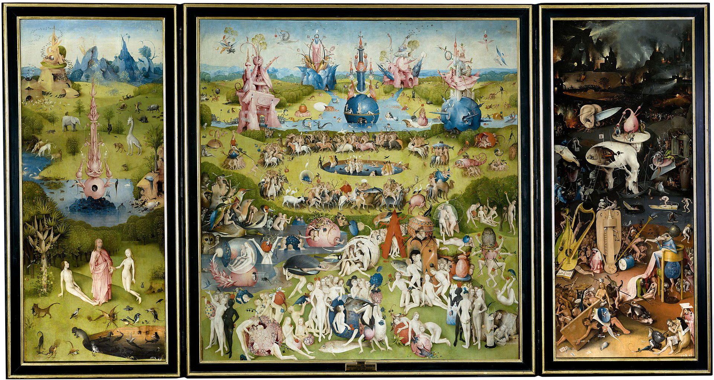
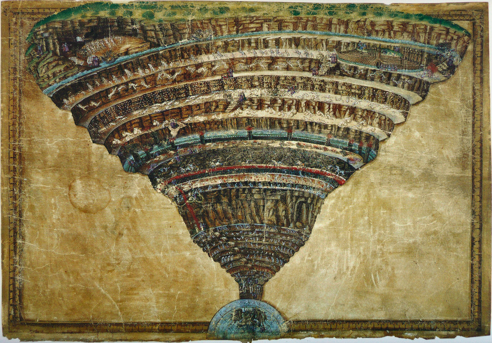

El jardín de las delicias - El Bosco
En el tríptico abierto se inlcuyen tres escenas. La tabla izquierda está dedicada al Paraíso, con la creación de Eva y la fuente de la Vida, minetras la derecha mestra el Infierno. La tabla central da nombre al conjunto, al representarse en un jardínlas delicias o placeres de la vida. Entre Paraíso e Infierno, estas delicias no son sino alusiones al Pecado, que muestran a la humanidad entregada a los diversos placeres mundanos.
El Infierno - Sandro Botticelli
Dante Alighieri, en el Infierno, primer canto, describe la visión del propio viaje en el ultratumba. Aquí el Infierno está dividido en círculos que son significativamente nueve, basado en el pensamiento aristotélico-tomistico. La construcción del Infierno está explicada por el autor en el canto XI.